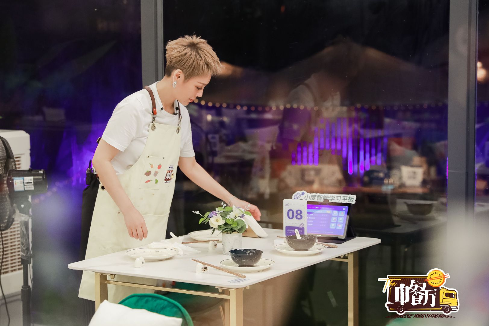
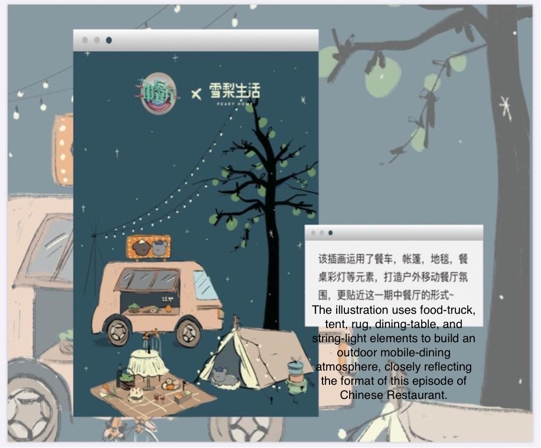
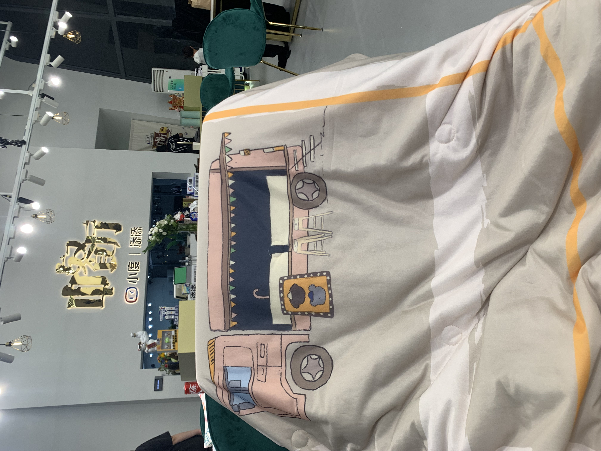
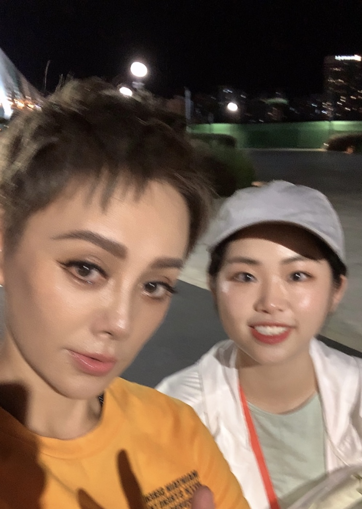

Brand Integration · Variety TV · Livestream Commerce
Chinese Restaurant S5 × Cherie Life
A first prime-time variety, celebrity, and livestream commerce — wired into one funnel.
The Brief
Make sponsorship sell — not just sit in the corner.
Variety sponsorship usually stops at logo placement: a sticker in the corner of frame, a scripted shout-out, a banner nobody remembers. Cherie Life — a lifestyle homeware label — didn’t need more awareness. It needed the show to actually drive purchase. The brief was to turn prime-time entertainment into demand, without breaking the warmth that made people tune in.
The Move
Write the products into the story.
We built a bridge that didn't exist. Instead of cutaway ads, Cherie Life's pieces became the cast's everyday objects — the aprons they cooked in, the bowls they ate from, the cushions and parasols around the courtyard. Each product entered like a character, so the audience absorbed it as part of the scene rather than an interruption. We borrowed the show's IP and its cast's fame to open an audience channel straight into Cherie Life's Taobao livestream. A seamless brand-and-IP integration sparked the desire to buy; the livestream let them buy it.

How it worked
I owned the brand-integration plan and ran it on the ground — mapping where each product could live inside the run-of-show, art-directing the custom tableware so it read as the cast’s own (the dinner bowls were ours, restyled for each location stop), and wiring the touchpoint chain that carried attention from broadcast → social hot-search → Cherie livestream on Taobao. Placement, prop styling, on-screen cueing and the livestream handoff were planned as one funnel — not three separate buys.



Impact
A first of its kind: prime-time variety, celebrity, and livestream commerce wired into a single funnel — proof that an integration can sell, not just sponsor.
Credit
Hunan TV Program Production Center - Wang Tian Studio